两种设计风格

- huuhghhgyg
- 1 min read

简单介绍下两种设计风格：波普（POP）风格和孟菲斯风格（Memphis）
波普风格
波普艺术被定义为：大众传播媒介的形式与技巧，并以人们日常生活中随处可见的广告、大众传媒与通俗文化中的形象为主题的艺术创作。
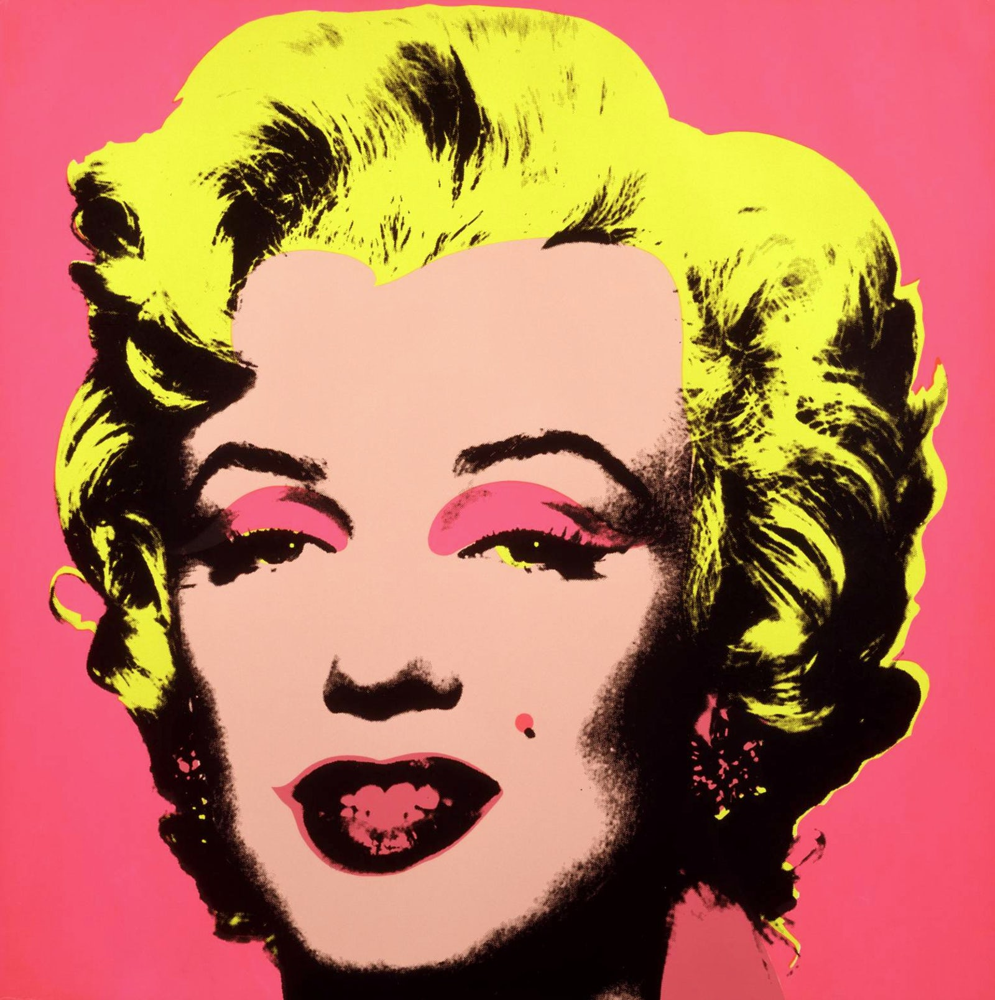
特征
波普本身颠覆了人们对艺术的印象，而总结波普的特点，可以归纳为以下三个：
-
通俗化 波普模糊了艺术和非艺术、现存品和艺术品、精英文化与大众文化、高雅与低俗之间的界限，把艺术从神坛上拉下来，成为所有人都可享受之物。
-
商业化 波普艺术的重要特点就是将着眼于日趋发达的商业流行文化，用极为通俗化的方式直接表现物质生活，强调消费主义与物质主义。
-
形式主义 波普艺术的作品追求别具一格外形，装饰，追求纯粹的视觉快感，希望新颖多样的艺术表现形式来反抗现代主义的“无趣、无聊、一成不变”。
表现手法
元素：借用大众传媒和日常生活物品
在波普艺术中，常常会借用广告、商业、流行文化图像，以及名人或者虚构人物形象来作为主要视觉资源，因此来呈现消费型社会具有的各种杂乱表象。
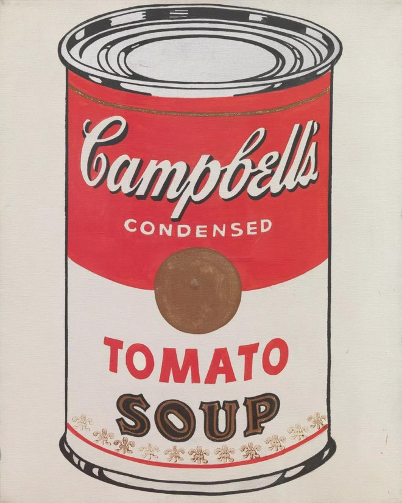
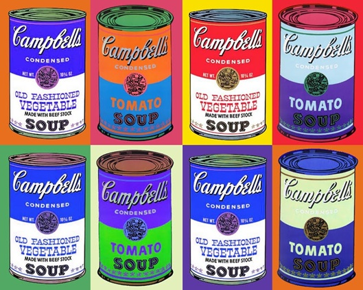
Andy Warhol的金宝汤（Campbell’s Soup Cans）
手法：拼接、覆盖、粘贴、重复
波普的重要特质之一就是能够通过不同的载体和复制形式体现出趣味。 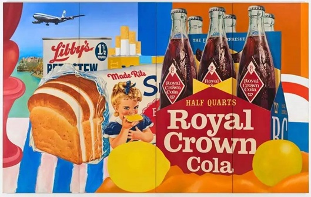
Tom Wesselmann的静物拼贴作品
色彩
波普的作品中通常更注重色彩表现的刺激性效应。例如使用高度饱和的色彩，以及强化无彩色系（黑白灰）与有彩色系之间的对比张力，营造一种强烈而廉价的色彩感，并同时用来暗示物质主义对人们的诱惑。 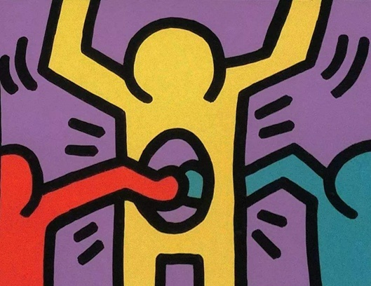
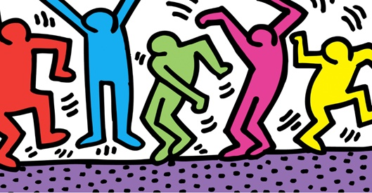
Keith Haring
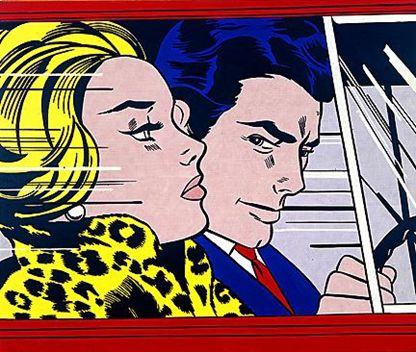
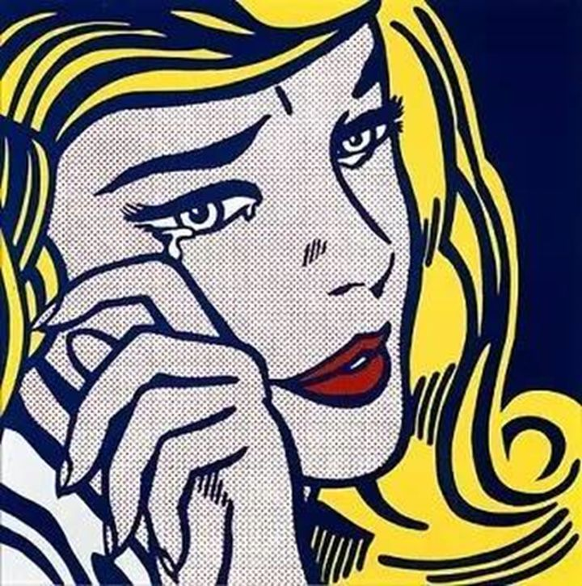
美国波普代表艺术家
- 安迪·沃霍尔（Andy Warhol）：色彩组合、质感
- 凯斯·哈林（Keith Haring）：涂鸦风格
- 罗伊·里奇特斯坦（Roy Lichtenstein）：漫画风格
孟菲斯风格
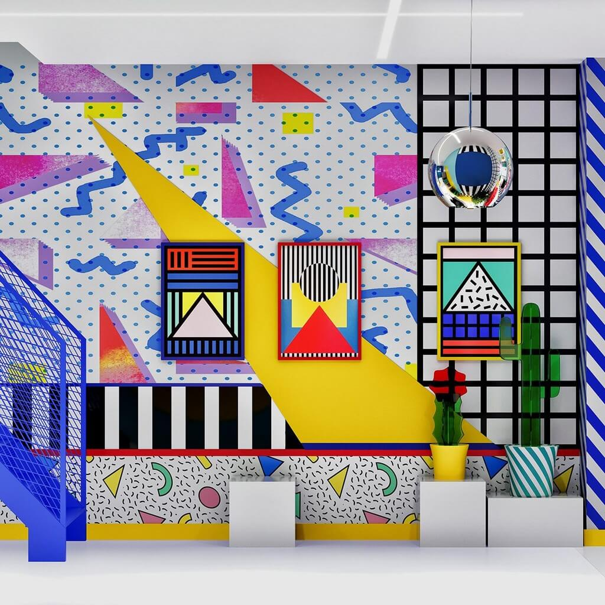
风格介绍
孟菲斯风格最早形成于1981年，是由一群意大利籍家具设计师探索出来的一种装饰艺术的设计风格。他们反对单调冷峻的现代主义，提倡装饰，强调手工艺方法制作的产品，并积极从波普艺术、东方艺术、非洲拉美的传统艺术中寻求灵感。
上个世纪70年代，非常流行极简主义和现代主义，物极必反，不会有一种设计风格永远流行，总有人看多了没有装饰性、没有个性化的设计风格，厌倦了单调冷峻的现代主义，所以才有了孟菲斯风格的诞生。孟菲斯的兴起可以说是“装饰主义”的复苏。
特点
而要追究到底是什么造就了这种引人注目的设计风格，则必须追溯到孟菲斯设计师们的设计主张:
无限制的材料使用
孟菲斯设计师们认为材料是一种积极交流感情的媒介，因此孟菲斯对于材料的态度是感性而非理性的，他们不考虑材料的真实感，不管是大理石、木材还是塑料像，在孟菲斯设计师看来都无区别。他们看重的是材料的表现力，例如材料的肌理、花纹、色彩、浓度、透明度、发光度、反光率等等。例如孟菲斯很喜欢当时被认为很“俗气”的材料——三聚氰胺塑料胶合板，用表达朝气蓬勃，活泼向上的生活态度。
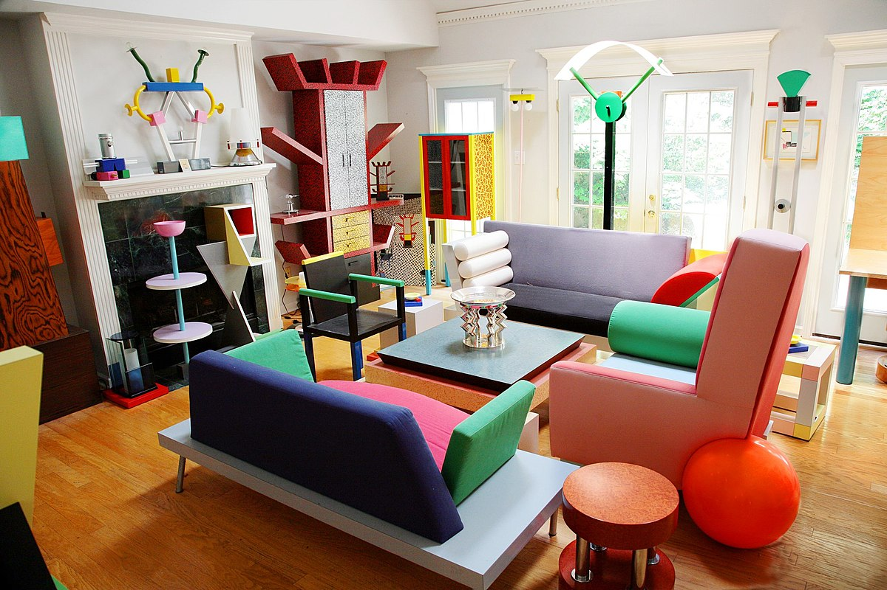
强调个性化的装饰
在装饰方面，孟菲斯一直抵制现代主义的“装饰即罪恶”、“少即是多”理论，总是在设计中表现富有个性的设计形式和文化涵义。
孟菲斯的美学灵感主要汲取自装饰艺术和波普艺术，在设计中通常采用抽象图案来作为装饰元素，使它布满产品表面，变产品的静态为活跃的动态结构。而且在色彩方面，反现代主义设计规定的色彩学法则和配色规律而行，喜欢采用色调差别很大的色块并列，产生一种颤动的视觉效果，甚至不惜互相干扰，以创造一种风趣、滑稽、诙谐、戏谑的后现代情调，造成亦庄亦谐的效果。
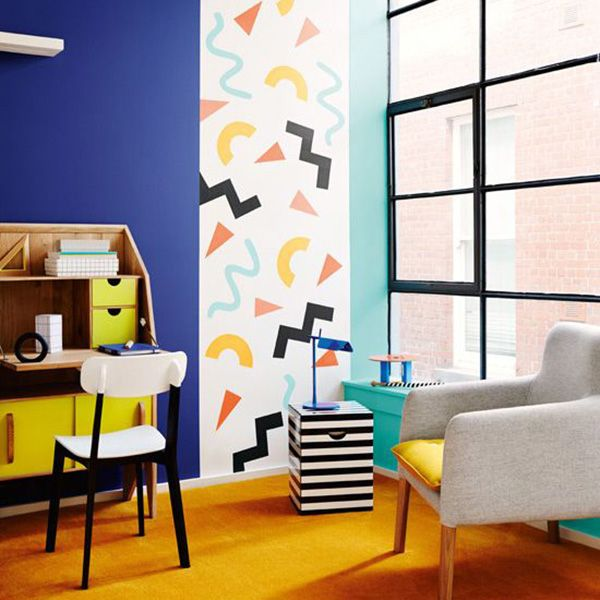
现代孟菲斯的特征:
- 高饱和度的颜色
- 重复的几何图形
- 黑色粗描边
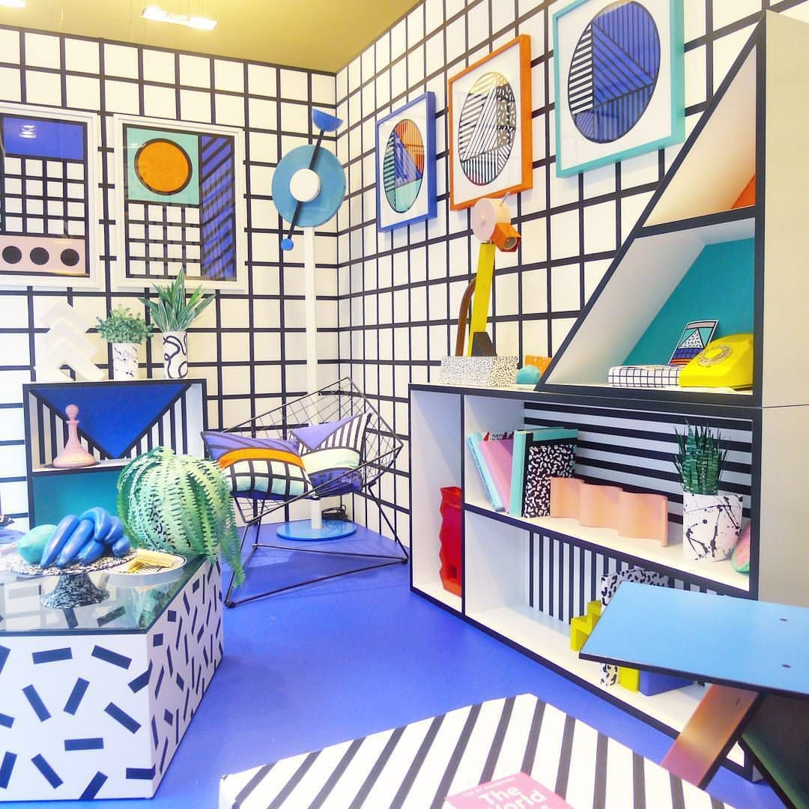
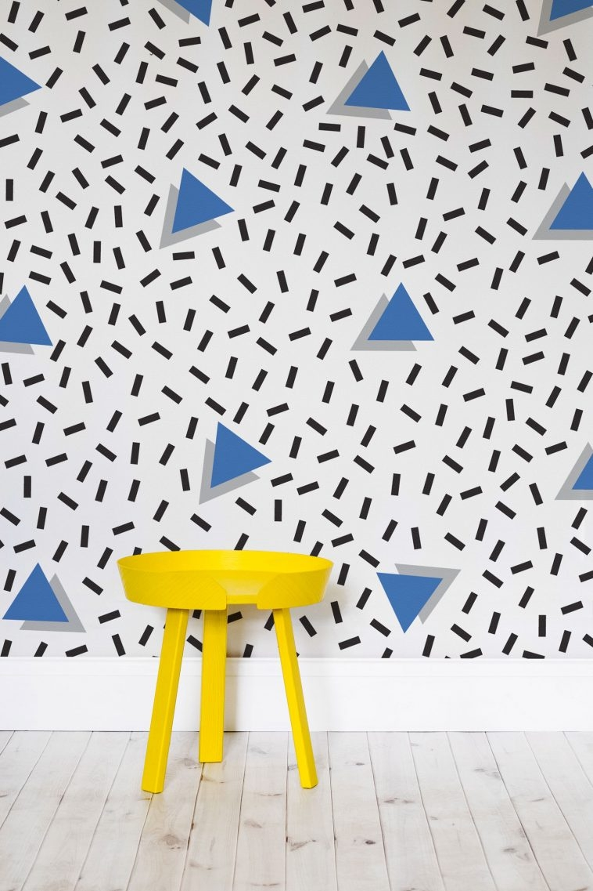
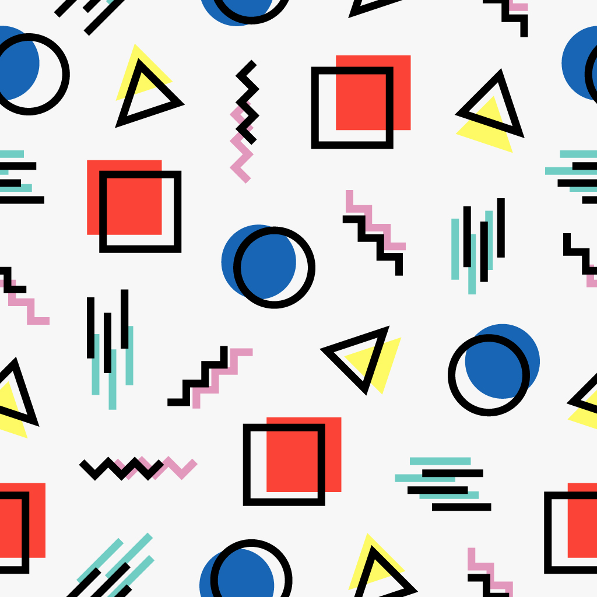
孟菲斯风格在色彩上，常常打破配色规律，喜欢用一些靓丽、纯度高、大胆、对比强烈的配色，借鉴了波普艺术的配色。
在排版上，元素之间没有过多的联系，元素的排列常常无规律可循，正是因为无规律可循，跳跃的色彩和元素运用得好，反而更能吸引人的眼球，但是要做到“形散神不散”，构图上一定要保持平衡，这是做好孟菲斯风格的必要条件。
孟菲斯风格还有一个很明显的特点，就是运用大量的几何元素，点、线、面综合运用。规则的几何图形有圆形、三角形、矩形、圆环、波浪线、网格、斜杠等等，不规则的几何图形也是由点、线、面拼贴而成。把这些规则的几何图形和不规则的几何图形排列好，再加上大胆跳跃的配色，就可以做出孟菲斯风格了。
应用
孟菲斯风格最初是运用于室内设计比较多。后来由于孟菲斯风格在设计上比较大胆，比较吸引人眼球，适合做招贴、海报，慢慢地也运用在了平面设计当中。
- Tags:
- 设计